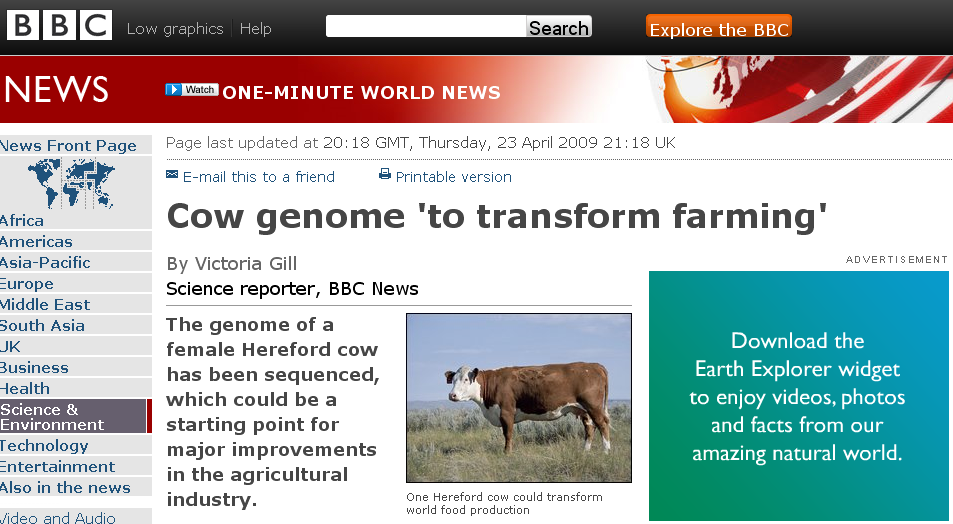
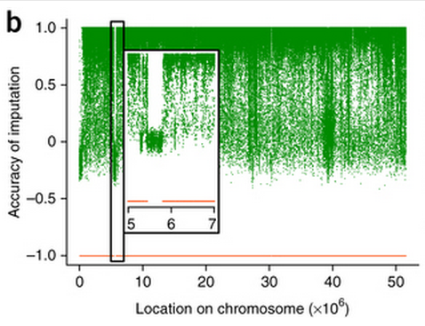

Good news rarely arrives late on a Wednesday night, so I was pleasantly surprised when news of a new Bos taurus reference assembly, Btau_5.0 reached my ears. Btau_5.0 replaces 2009s Btau_4.6.1 and will probably replace the widely used umd 3.1 assembly. Whilst optimistic predictions had a new reference genome arriving by Christmas 2014, I wasn’t holding out too much hope!
For the uninitiated, a reference assembly or reference genome is a high quality representative example of the genome of an organism, often assembled from multiple (in this case 2) individuals.
 The first reference assembley caused quite a stirA good reference genome allows for the quick and relatively painless assembling of other genomes of the same organism, as well as accurate identification polymorphic sites in those genomes.
Problems in the reference genome lead to regions of the genome that just don’t make sense.
 When your reference assembley makes no sense, your analyses make no sense(as shown strange drops in imputation accuracy in Daetwyler et al 2014)So why am I excited about Btau_5.0? Compared to umd3.1 t looks really good.
| umd3.1 | Btau_5.0 | |
| Total-length | 2670123310 | 2724980740 |
| Contig N50 | 276285 | 96955 |
| Contig count | 42267 | 75617 |
Better than UMD3.1?
Contig (from contiguous) N50 is the figure by which reference assemblies are judged. N50 is a weighted mean statistic such as that 50% of the assembly is contained in contiguous set of overlapping DNA segments equal to or larger than this value.
Whilst the length of both assemblies are comparable, Btau5.0 contig N50 is 2.8 times that of umd3.1, wow!
Full stats can be accessed here
Sounds perfect?
One disappointment is the total length of the assembly; we’re still missing a good chunk of the whole genome! For the time being I’ll have to accept that ~10% of the data I sequence remaining unmapped and unused.
Additionally, whilst contig N50 can be a useful way to compare genomes of equal size, it is also possible to artificially raise N50 by deliberately excluding short contigs and/or increasing the padding of Ns within scaffolds. The proof will be in the pudding!
Progress is always a good thing which is why I'm very excited to see what's in store for bovine genomics, but that doesn't mean I'm not apprehensive at amount of server time I'll need to realign all my sequences!
I'll try to keep this post updated as I find out more; thanks for reading!